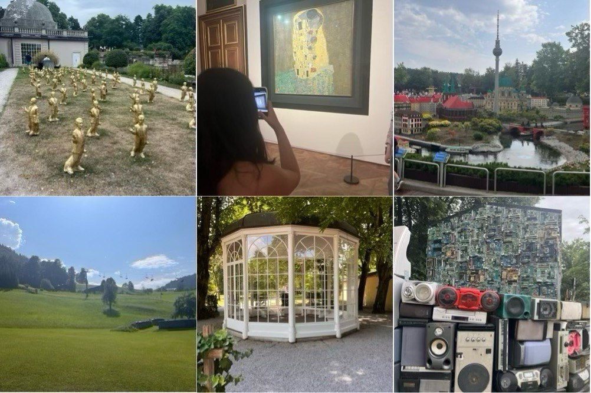

La vida es un viaje
Parece un tópico más, pero el descanso es necesario, para el cuerpo y la mente. Y no hay mejor manera de recuperarse que viajar, conocer nuevos sitios y culturas, pasar tiempo con la gente querida y reducir revoluciones.
Este verano, entre unas cosas y otras, no habré estado en el apartamento de la playa más de 5 días seguidos. Y por un lado, muy bien, no nos hemos aburrido nada (cosa que sí que pasó el verano pasado). Pero el hecho de no haber parado (que no quiero que parezca que me estoy quejando) ha supuesto ciclos inestables de sueño, mucha comida fuera de casa y falta de ocio videojuerguil :)
Venga, vamos por partes.
Salud¶
Fisicamente bien. He seguido yendo algunos días al gimnasio (uno que tiene aire acondicionado, que en la calle ha sido imposible estar) en la playa; eso sí, menos de lo que debería, lo suficiente para no perder el hábito, y no ganar ningún kilo. Creo que es el primer verano en años que ni subo ni bajo peso.
A nivel de sueño, excepto en los viajes que hemos madrugado, lo más normal ha sido levantarme entre las 8 y las 9, que no está nada mal. Muchas siestas y mucho aire acondicionado. El verano de El Niño, y varias olas de calor han motivado varios resfriados, pero mejor moquillo que muerte.
Del tema hombro, decisión tomada. Volví a ver a la traumatóloga y voy a seguir su consejo. A mediados de octubre me operaré. Decisión tomada. Ya veremos, de 6 a 8 semanas de baja, para poder conducir y hacer vida normal.
Trabajo¶
En la entrada anterior hacía un resumen del año académico y comentaba que más o menos repetía módulos y que estaba comenzando con el vibe-writing. Han pasado seis semanas, y más o menos he escrito 6 sesiones nuevas sobre ingeniería de datos, y la verdad, están quedando muy bien. Desde SQL analítico, modelado dimensional, almacenamiento distribuido de datos, motores de consulta y herramientas para ELT como DLT para EL y DBT para la T. Cuando termine el bloque entero lo publicaré (espero que a lo largo de la primera quincena de septiembre).
Ahora toca refactor del planning. La operación del hombro provocará que faltaré a clase unas semanas, y no quiero dejar nada empantanado. Del módulo de Base de Datos no me preocupo; quien venga, seguro que mejor o peor sabrá sacarlo adelante, pero la parte de IABD es mucho más compleja y es un marrón que intentaremos minimizar.
La prioridad número 1 es la auditoria de los PIIAFP, que tenemos hasta finales de setiembre y hay que subirlo todo a la plataforma del MEC tan pronto como sea posible.
No todo es trabajar¶
Salzburgo (creo que hemos estado en el lugar más bonito del mundo), fiestas de Elche, Denia y Cazorla. Familia, amigos, familia y más amigos. De los viajes, la experiencia de estar en Salzburgo, Viena, Munich y LegoLand ha sido de 10. Pensábamos que iba a hacer un poco más de fresquito, pero la ola de calor también cruza fronteras. Para el verano que viene, si todo va bien, queremos ir a Dinamarca al museo de Lego. Ahí queda escrito.

El resto, principalmente playa, siestas y desconexión. Este año no pude ir al Low por coincidir en fechas con el viaje a Salzburgo (así que no pude vivir el cambio a Torrevieja), con lo que, a nivel musical, alguna verbena en las fiestas del pueblo y poco más. Pensando si ir al Oasis Festival en Elche, que muy bien que sea en casa, pero muy mal que sea en el puente de Octubre.
De ocio digital, he seguido con la lectura de novelas, y he visto varias películas y series. En cuanto a libros, a mitad de verano terminé Todo Muere (fin de la trilogía de Todo Arde de Juan Gómez-Jurado), y también me he leído Objetivo cero de Anthony McCarten, mezcla de thriller con privacidad de los datos que tiene pinta de que acabará en película.
Respecto a las pelis, no podíamos dejar de ir al cine a ver La odisea de Nolan, y Spider-man: Brand New Day. Diferentes y muy disfrutables ambas. Lo de Nolan es para quitarse el sombrero. En casa, muchas películas y casi todas buenas: La vida de Chuck (Prime Video) tierna y bonita por igual, Anniversary (Prime Video) esperemos no llegar ahí, He-man: Masters del universo (Prime Video) mi ídolo de la infancia, Tyler Rake 2 (Netflix) mi alter ego, Rondallas (Movistar+) molaría mil formar parte de una, Bottoms (Prime Video) con un humor irreverente y Máquina de guerra (Netflix) con un armario ropero de 2x2.
De series, algo menos. Con Andreu acabamos El joven Sherlock (Prime Video), que nos ha encantado. Con mi mujer, El y ella (Netflix), con un giro final muy inesperado, y por mi cuenta, me he centrado en Blue Lights (Movistar+), que estoy dentrísimo y con ganas de las cuarta temporada, y otra joya que tenía pendiente, Silo (Apple TV). La primera temporada mejoraba con cada capítulo, y en volver a Elche, seguiremos con ella. Ahora mismo están emitiendo la tercera y la cuarta ya está confirmada.
Videojuegos poco, como he comentado antes. Al haber estado menos en casa, cuando me he puesto, lo he hecho únicamente a la Xbox. Sólo un juego grande. Me acabé Gears of War Reloaded, para prepararme para el E-Day. Se nota que las mecánicas son de un juego de hace 20 años, pero el retoque gráfico le ha sentado bien y se deja jugar. El resto, a mis drogas arcade, Vampire Survivors, Deep Rock Galactic Survivors, Monsters are Coming y hace un par de días me puse con TerraTech Legion, otra vuelta de tuerca al género survivors.
Lo que está por venir¶
Sinceramente, creo que viene un buen curso por delante. En un par de días, camino a Elche, conocer a nuevos compañeros y a tope con la auditoria de los PIIAFP. Terminar los apuntes de ingeniería de datos y comenzar con el módulo de Base de Datos, que en principio no voy a retocar.
A nivel de ocio, me voy a centrar en meterme Silo en vena, comenzar la novela La muy catastrófica visita al zoo de Joël Dicker, jugar a Resonance: A Plague Tale Legacy y a Wo Long: Fallen Dynasty (a no ser que encuentre una ofertaza de Lobezno y lo compre día uno) e ir al cine con mi señora a ver El ser querido de Sorogoyen. Alguna comida y cena ya ha planificada con amigos, así que viene un buen mes por delante.
Nos leemos el mes que viene.